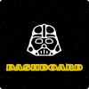
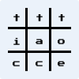

Olá, esse sou eu, o Mateus, tenho 20 anos, moro e sou de São Paulo -
SP, curso Sistemas de Informação e faço alguns projetos para
aperfeiçoar meus conhecimentos.
Dê uma olhadinha neles!
Projeto de um site que gera imagens aleatórias para o usuário e ele pode escolher entre as três opções, imagem normal, blur ou grayscale.
Projeto de um site que mostra informações dos filmes do Star Wars de forma mais visual para o usuário.
Projeto de um site onde o usuário pode jogar jogo da mémoria com as fichas sendo algumas ferramentas e tecnologias.
Projeto de um site onde o usuário pode jogar jogo da velha.
Projeto de um site para ajudar pessoas que querem fazer um churrasco e precisam saber a quantidade aproximada de carnes e bebidas.
Projeto de um site onde o usuário registra seu pedido de comida e a entrega desses mesmos pedidos é por conta do app.
Projeto de um site de pesquisas de games, onde os dados são coletados no app e depois são listados no site. Apresenta um dashboard com gráficos.